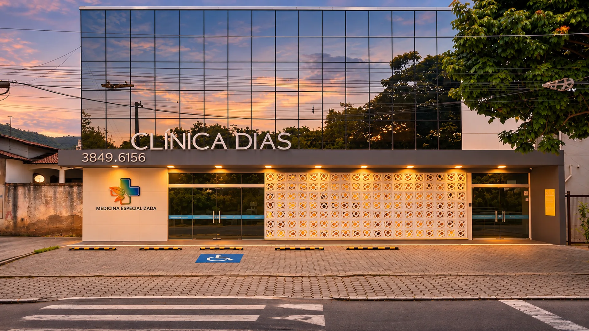
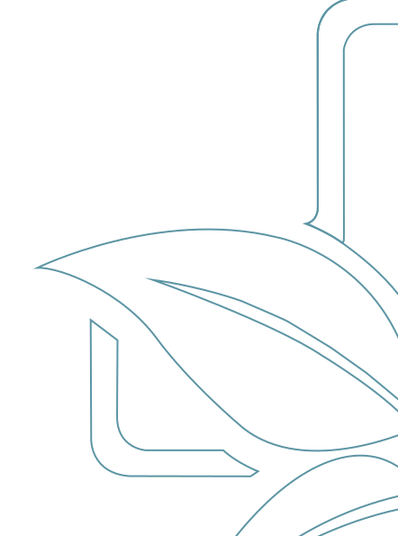
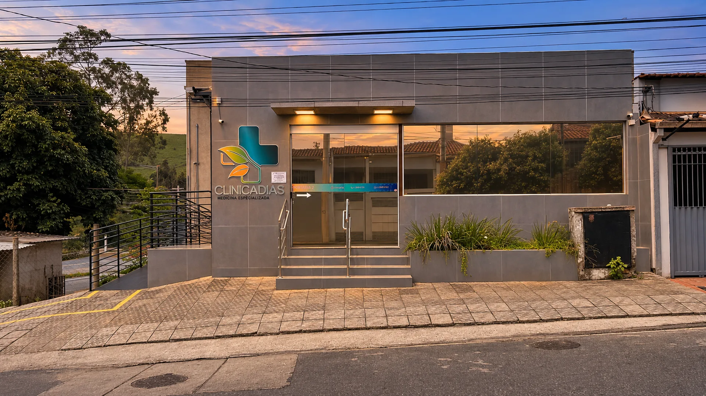
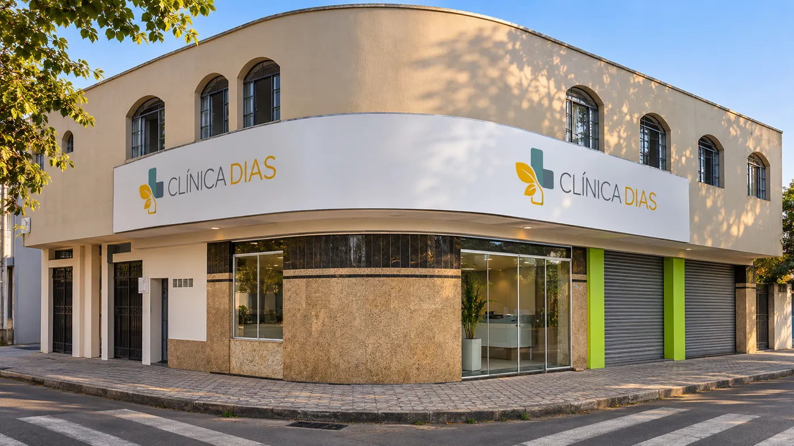
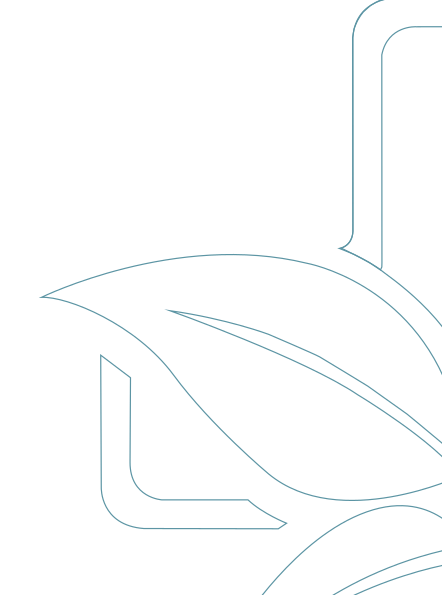
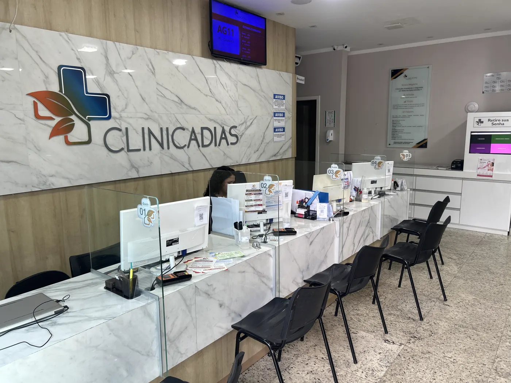
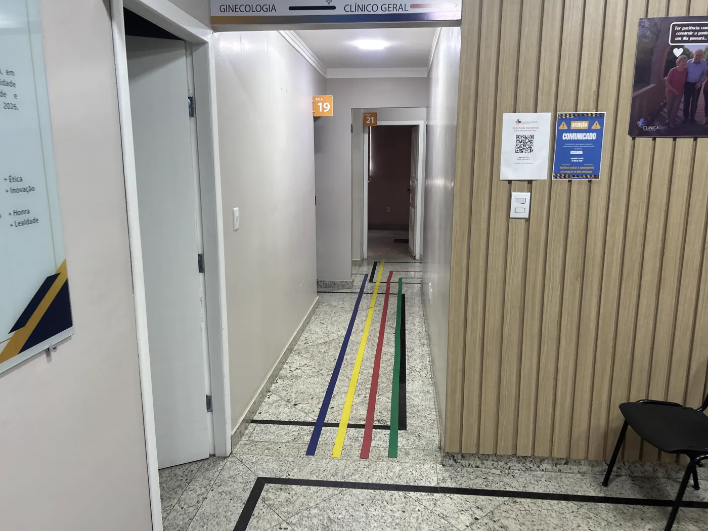
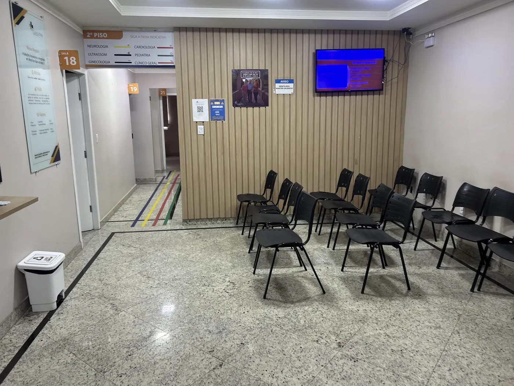
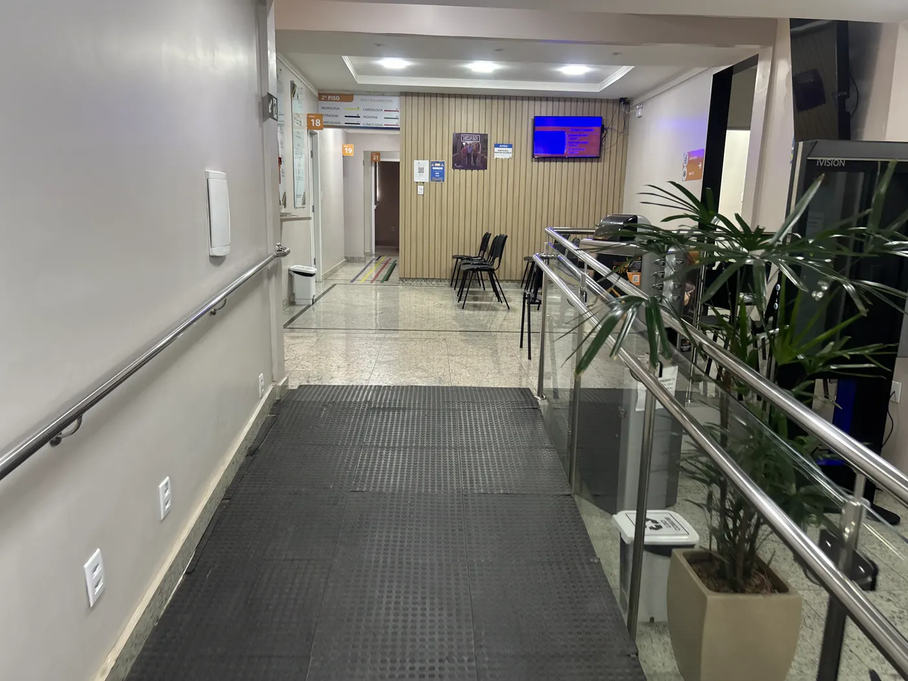
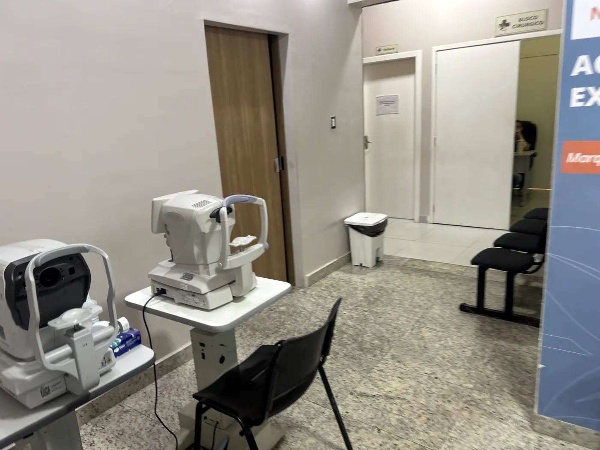

Medicina especializada desde 2010
Cuidado de especialista perto de casa, em Timóteo, Coronel Fabriciano e Ipatinga.
29 especialidades, da clínica geral à cardiologia, com agendamento por telefone.
Unidades
Três endereços no Vale do Aço. Ligue para a unidade mais perto de você.
-
Recepção 1 · Rua 128 
Portaria 2 · Av. Treze 1 / 2Timóteo
Unidade principal, com duas entradas: a recepção da Rua Cento e Vinte e Oito, com estacionamento, e a Portaria 2, pela Avenida Treze.
- Endereço
- Rua Cento e Vinte e Oito, 14 · Santa Maria
- Horário
- Segunda a sexta, das 8h às 18h
- Telefone
- (31) 3849-6156
-

Rua Pedro Nolasco, 107 Coronel Fabriciano
No centro da cidade. Ligue para saber os horários e as especialidades atendidas nesta unidade.
- Endereço
- Rua Pedro Nolasco, 107 · Centro
- Telefone
- (31) 99760-0755
-

Avenida Brasil, 700 Ipatinga
Na esquina da Avenida Brasil, ao lado da Drogaria Popular.
- Endereço
- Avenida Brasil, 700 · Iguaçu
- Horário
- Das 8h às 18h
- Telefone
- (31) 99745-4281
A clínica
Fundada em 2010 pelo cardiologista Douglas Lourenço Dias, para trazer a medicina especializada para perto das famílias de Timóteo e região.
- Sócio-fundador
- Dr. Douglas Lourenço Dias, cardiologista
- Formação
- Medicina pela Faculdade de Medicina do Vale do Aço (FAMEVAÇO), 2008
- Especialista
- Título em Cardiologia pela Sociedade Brasileira de Cardiologia (SBC)
- Pós-graduação
- Emergências Clínicas e Nutrologia
- Atende
- Cardiologia clínica e ecocardiografia

- 16anos em Timóteo
- 29especialidades
- 3unidades no Vale do Aço
- 16convênios e cartões
Especialidades
29 especialidades médicas e terapêuticas. Toque no nome para ler o que cada uma cuida.

Por dentro
Conheça o caminho antes de chegar: da portaria à recepção, da sala de espera aos consultórios.
Fotos da unidade de Timóteo. No passeio em 3D, feito a partir da planta, dá para andar por cada lugar.
Entrar no passeio 3D
01Recepção 1Rua Cento e Vinte e Oito 
02Corredor dos consultóriosAs faixas no piso levam a cada sala 
03Sala de esperaRecepção 1 
04Sala de esperaRecepção 2 
05Rampa de acessoPortaria 2, pela Avenida Treze 
06Exames de vistaRecepção 1
Arraste para girar
Cartão de benefícios
Tem CardFácil? A Clínica Dias é rede credenciada.
- a partir deR$ 40por consulta com médico especialista da rede
- até70%de desconto em exames de laboratório e de imagem
- Zerocarência: dá para usar logo depois de aderir
- até6dependentes na mesma carteirinha, conforme o plano
Valores e condições informados pelo CardFácil e sujeitos ao plano escolhido. Ao agendar, avise que é CardFácil.
Convênios
16 planos e cartões aceitos. Na hora de agendar, a equipe confirma a cobertura do seu plano.
 Abertta Saúde
Abertta Saúde Bradesco Saúde
Bradesco Saúde CardFácil
CardFácil- CardFácil Empresarial
 Cassi · Banco do Brasil
Cassi · Banco do Brasil Cemig Saúde
Cemig Saúde Cenibra
Cenibra- Copass Saúde
- PASA · Vale
 Polícia Militar
Polícia Militar Saúde Caixa
Saúde Caixa SulAmérica
SulAmérica- Usisaúde
- AAPI
- AAPT
- UnipassUnipass
Quem é atendido aqui
A opinião de quem cuida da saúde com a gente.
Atendimento, estrutura e cuidado contados por quem passou pela Clínica Dias.
Como chegar
Três endereços no Vale do Aço. Escolha a unidade para ver onde ela fica e traçar a rota.